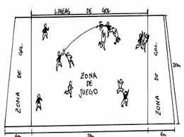

Características Generales y Objetivos
El UltimaBola es un juego similar al Ultimate (que es la principal modalidad deportiva del Frisbee).
El objetivo es pasarse una pelota entre l@s compañer@s y tratar de recepcionar dentro de la zona de gol.
TERRENO DE JUEGO
Se juega dentro del terreno de juego de un campo de Balonmano, aunque se puede adaptar a terrenos de juego más pequeños dependiendo de la edad y número de participantes.
MATERIAL
Se juega con una pelota del tamaño de Balonmano, aproximadamente de 56 centímetro de longitud de la circunferencia. La pelota
idónea es del tipo de autohinchable o similar, es decir que no haga daño en su recepción.
NÚMERO DE PARTICIPANTES
Se juega entre dos equipos de 6 jugadores (3 chicos y 3 chicas en la modalidad mixta). El equipo en posesión de la pelota es el equipo atacante, el otro el defensor.
DESARROLLO DEL JUEGO Y PRINCIPALES REGLAS
- Se marca gol cuando un jugador o jugadora del equipo atacante consigue recibir la pelota dentro de la zona de gol del otro equipo.
- El saque se realiza lanzando la pelota hacia adelante y sólo la puede recibir el equipo contrario al que hace el saque.
- Hasta que se realiza el saque, todos los jugadores de ambos equipos deben estar dentro de sus respectivas zonas de gol.
- No se puede correr con la pelota en la mano. En caso de recibir un pase en carrera, se permite hacer un pase inmediato o dar los mínimos pasos necesarios hasta parar (3 pasos)
- La pelota se puede tener en la mano hasta 5 segundos. En ese tiempo se puede pivotar con un pie y no se le puede arrebatar la pelota al jugador o jugadora que la tiene.
- Cuando la pelota cae al suelo, o sale fuera de banda, es falta del último jugador o jugadora que la tocó, y saca el equipo contrario desde el punto donde quedó la pelota o pisando la línea cuando salió fuera.
- Si un equipo que defiende intercepta un pase del equipo contrario, sigue el juego pasando a ser automáticamente equipo atacante y el otro equipo defensor.
- Es falta defender dos jugadores a la vez sobre un atacante. Ante una pelota en el aire que cogen simultáneamente un atacante y un defensor, tiene preferencia el atacante.
- Ningún participante puede defender a menos de un paso de distancia del atacante, ni golpearle la mano en el lanzamiento.
- Si equipo defensor comete falta dentro de su propia zona de gol, el saque del equipo contrario se hace desde fuera de dicha zona, en el punto más cercano al lugar de la falta.
- Después del saque de falta no se puede conseguir directamente gol (en el primer pase)
- Cuando un equipo consigue gol, cambia de campo automáticamente y hace el saque de puesta en juego.
VARIANTES
En la modalidad mixta no se permiten tres pases seguidos o más entre jugadores del mismo sexo.